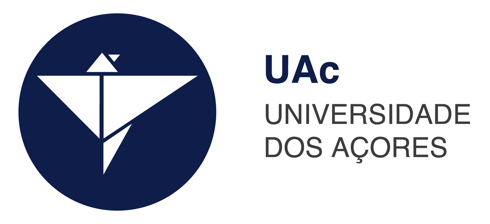
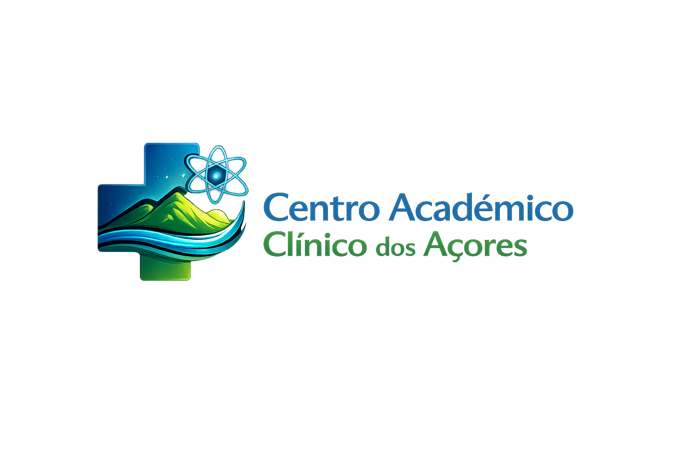

Parceiros Institucionais
O CACA desenvolve a sua atividade em estreita colaboração com as principais instituições de ensino, saúde e governo regional dos Açores.



O Centro Académico Clínico dos Açores (CACA) tem como missão integrar unidades de saúde, ensino superior e investigação científica, promovendo a melhoria contínua da qualidade dos cuidados de saúde prestados à população açoriana.
O CACA aposta na aplicação da evidência científica, no desenvolvimento de investigação clínica e de translação, na inovação dos cuidados de saúde e na formação de profissionais altamente qualificados, com especial enfoque nos domínios críticos e nas doenças com maior incidência na região.
Através da articulação entre a Universidade dos Açores e o Serviço Regional de Saúde, o CACA posiciona-se como uma estrutura fundamental para o desenvolvimento da investigação clínica no arquipélago, criando pontes entre o conhecimento académico e a prática clínica diária.
Desenvolvimento e aplicação de soluções digitais para melhorar o acesso, a eficiência e a qualidade dos cuidados de saúde na Região Autónoma dos Açores, superando as barreiras da insularidade.
Investigação e implementação de sistemas baseados em inteligência artificial para apoio ao diagnóstico, à decisão clínica e à gestão dos cuidados de saúde, com modelos adaptados à realidade regional.
Promoção de modelos de prestação de cuidados à distância, reduzindo barreiras geográficas entre as ilhas e reforçando a equidade no acesso aos serviços de saúde especializados.
O CACA desenvolve a sua atividade em estreita colaboração com as principais instituições de ensino, saúde e governo regional dos Açores.

O Centro Académico Clínico dos Açores disponibiliza regularmente oportunidades para estudantes e investigadores nas suas iniciativas científicas e tecnológicas.